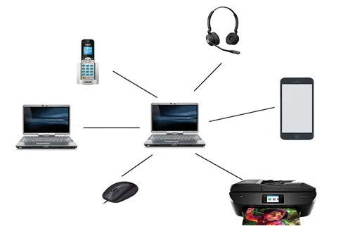
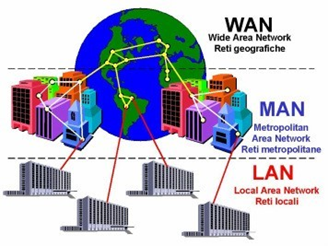
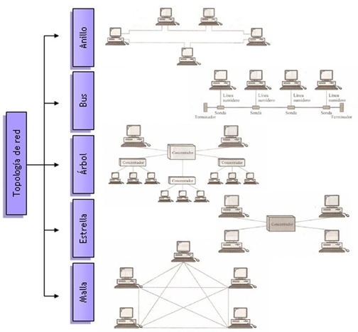

Las redes pueden clasificarse por varios criterios, según su tamaño, según su nivel de acceso o privacidad, según su relación funcional y según su topología, vamos a estudiar las redes informáticas desde cada uno de estos criterios:
-
Según su tamaño o área de cobertura
- Redes de Área Personal (PAN) (Personal Area Networks): Comunica dispositivos en un radio de pocos metros.

- Redes de Área Local (LAN) (Local Area Networks): Redes de pequeña extensión, como en una casa, un instituto, una universidad o una empresa.
- Redes de Área Metropolitana (MAN) (Metropolitan Area Networks): Cubren una mayor superficie como una ciudad o un municipio.
- Redes de Área Extensa (WAN) (Wide Area Networks): Conectan equipos entre ciudades, países o continentes distintos.

- Redes de Área Personal (PAN) (Personal Area Networks): Comunica dispositivos en un radio de pocos metros.
-
Según su nivel de acceso o privacidad:
- Redes públicas. Son aquellas redes cuyo acceso es público y global, de modo que permiten a sus usuarios comunicarse y compartir información y servicios dentro del área pública que abarcan. El ejemplo más claro de red pública y de ámbito mundial es Internet.
- Redes privadas. Son redes restringidas al propietario o a los usuarios que las utilizan (son redes LAN en su mayoría). Cuando en estas redes se utilizan herramientas típicas de la red pública Internet (web, correo electrónico, FTP, etc.) se denominan intranets.
- Redes privadas virtuales (VPN). Son un tipo de redes resultante de la interconexión de varias redes privadas entre sí, aprovechando la infraestructura de una red global.
-
Según su relación funcional:
- Cliente-servidor: Los clientes utilizan los recursos compartidos y los servicios que proporcionan los servidores: web, datos, impresión, etc.
- Redes entre iguales o P2P (Peer to peer): Todos los dispositivos pueden actuar como clientes o servidores.
-
Según su topología
La topología es la forma de conexión de una red de ordenadores.- En anillo: Formando un círculo cerrado.
- En bus: Todos los ordenadores de conectan a una misma línea.
- En árbol: Con estructura jerárquica.
- En estrella: Con un único concentrador.
- En malla: Todos los ordenadores se conectan a todos los demás.
